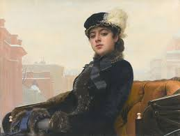

Неизвестная
Женщина ниоткуда
Одно из самых знаменитых и загадочных полотен русской школы живописи возникло словно ниоткуда.
В обширном эпистолярном наследии Крамского нет ни слова о работе над "Неизвестной". Не проясняют ситуацию дневники и воспоминания современников - нигде ничего. Какая-то таинственная "фигура умолчания" вместо досконально документированной творческой предыстории создания шедевра, именуемого "Русской Джокондой".